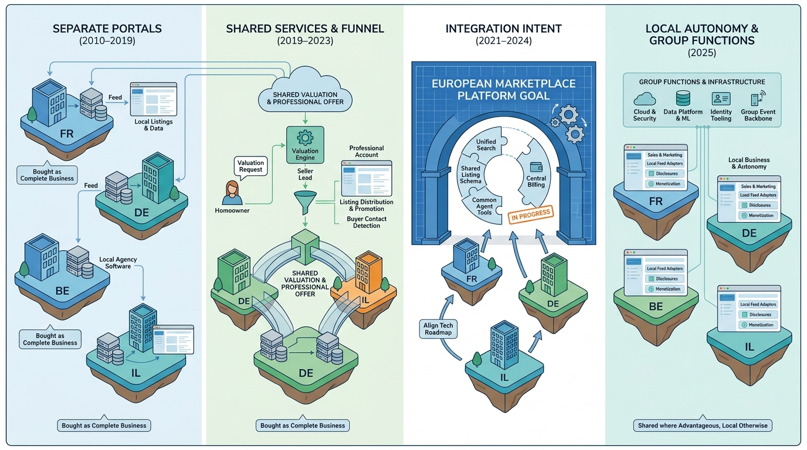

Part IX — PRACTICE: How Others Built It
AVIV Group: Building a European Real-Estate Platform from Acquisitions

Image generated by Google Gemini (gemini-3-pro-image-preview)
Part IX — PRACTICE: How Others Built It

Image generated by Google Gemini (gemini-3-pro-image-preview)